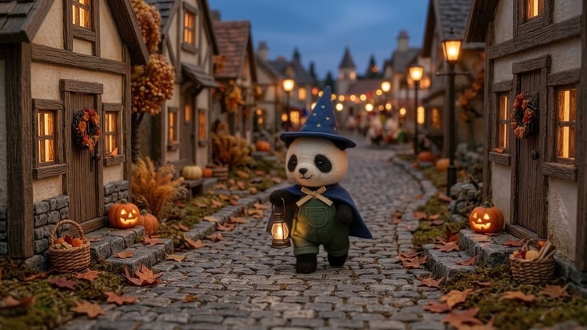
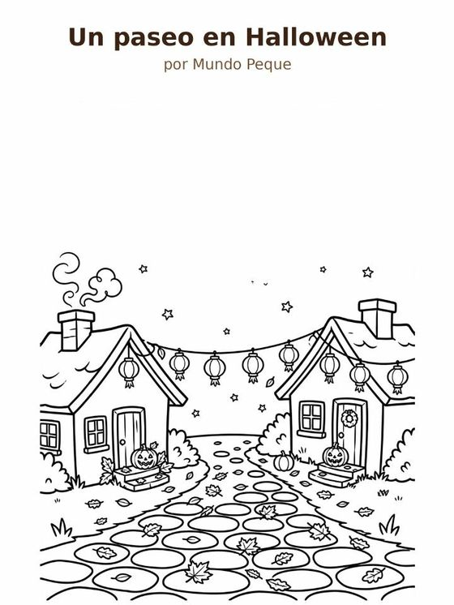
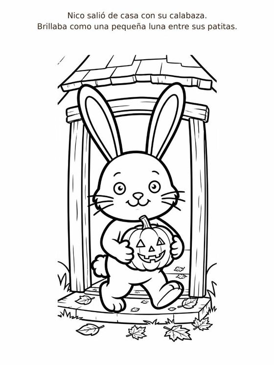
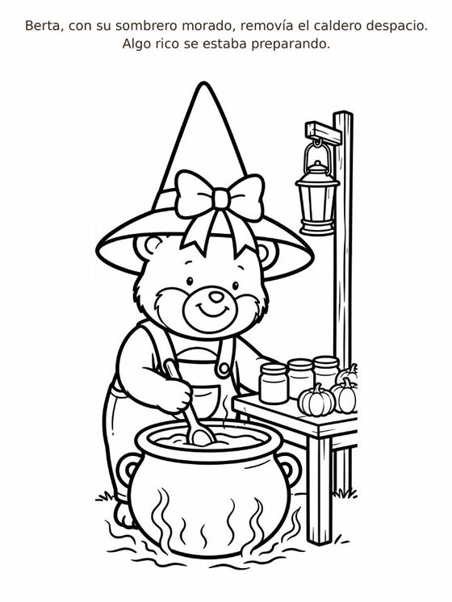
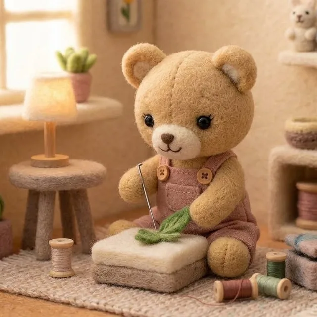
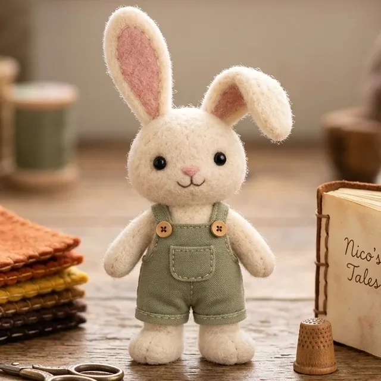
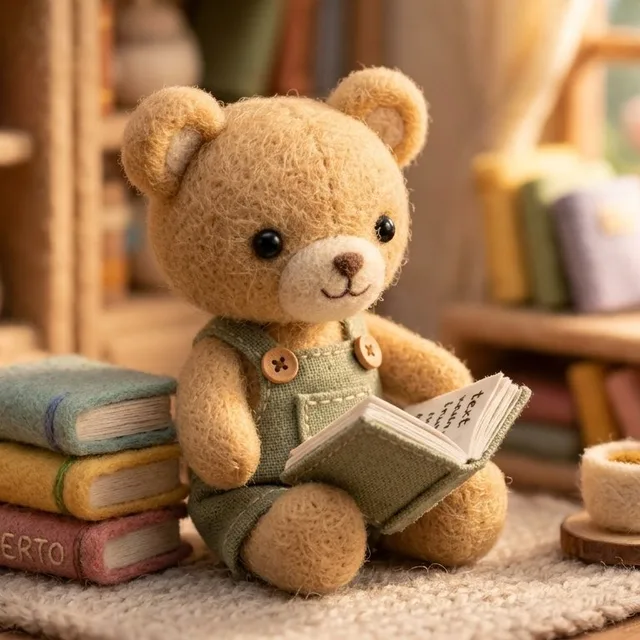
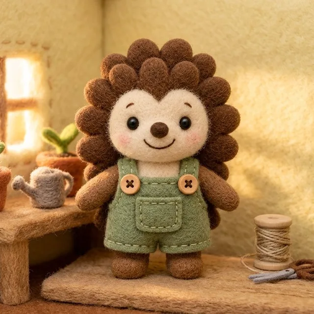
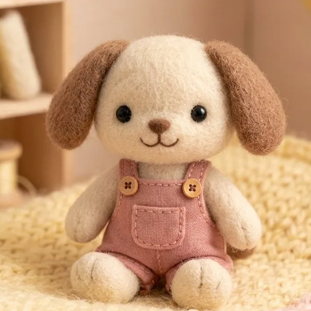

La receta de Roco: torrijas 🍞✨ | Mundo Peque
3:36
Ver en YouTube ↗Creemos que los más pequeños también merecen contenidos tranquilos, sin prisas ni estímulos innecesarios.
En Mundo Peque creamos historias de baja estimulación, con personajes artesanales, movimientos suaves, sonidos naturales y momentos cotidianos que invitan a observar, imaginar y disfrutar con calma.
Porque no todo tiene que suceder deprisa para ser maravilloso. ♡
Recetas sencillas y deliciosas
🎨Ideas hechas con cariño
🛁Un ratito para uno mismo
🏠La calma de estar en casa
🌙Historias para descansar
🌲Pequeñas aventuras
VÍDEOS
3:36
Ver en YouTube ↗SHORTS

Short
Ver en YouTube ↗
Short
Ver en YouTube ↗VÍDEOS

5:00
Ver en YouTube ↗SHORTS
Muy pronto
VÍDEOS
Muy pronto
SHORTS

Short
Ver en YouTube ↗VÍDEOS

3:00
Ver en YouTube ↗
5:00
Ver en YouTube ↗SHORTS
Muy pronto
Un refugio de pequeñas historias tranquilas: momentos de lluvia, descanso y sonidos suaves. Un espacio para disfrutar con calma, sin prisas y sin estímulos innecesarios.
VÍDEOS

1:00:00
Ver en YouTube ↗
1:00:00
Ver en YouTube ↗SHORTS
Muy pronto
VÍDEOS

4:00
Ver en YouTube ↗SHORTS

Short
Ver en YouTube ↗Todo se abre en nuestro canal de YouTube: @mundopequeconcalma

Disfraces, calabazas y pequeños paseos por el pueblo. Un Halloween lleno de ternura para disfrutar sin prisa. 🎃
En Mundo Peque también estamos preparando pequeñas historias para disfrutar en papel. Empezamos con una muestra gratuita para colorear, imaginar y compartir momentos de calma en familia.

Cuadernillo para colorear


Estamos preparando nuevos cuentos y cuadernillos para seguir compartiendo pequeñas historias y momentos de calma en familia. Muy pronto habrá más por descubrir. ♡
Ideas sencillas inspiradas en las aventuras de nuestros personajes, para disfrutar con calma en familia, lejos de las pantallas.
A veces, las aventuras más bonitas empiezan con las cosas más sencillas. ♡
Un proyecto que nació en casa, pensando en nuestro pequeño.

Mundo Peque · Con Calma nació en casa, como una iniciativa familiar, pensando en nuestro pequeño, que entonces tenía apenas un año.
Como muchas familias, nos preguntábamos qué tipo de contenido queríamos que viera cuando llegara el momento de utilizar una pantalla.
No buscábamos que pasara más tiempo delante de ella. Todo lo contrario: queríamos que esos ratitos fueran puntuales, tranquilos y acompañados, sin imágenes frenéticas, sonidos estridentes ni estímulos constantes.
Y así surgió una idea: ¿por qué no crear nosotros mismos ese pequeño mundo que nos gustaría compartir con él?
Poco a poco comenzaron a nacer los personajes de Mundo Peque, sus hogares acogedores y sus pequeñas historias.
Un conejo que cocina, un osito que lee mientras llueve, una ardilla que descubre el otoño… Escenas sencillas donde no hace falta que ocurran mil cosas para disfrutar de lo que sucede.
Lo que empezó como una idea para nuestro hijo fue creciendo hasta convertirse en algo que queríamos compartir con los demás.




Creemos que la infancia necesita, sobre todo, juego, movimiento, imaginación, naturaleza y tiempo compartido.
Las pantallas no deberían sustituir esas experiencias. Pero sabemos que forman parte de la vida cotidiana de muchas familias.
Por eso, cuando se utilizan, nos gusta pensar que también pueden ofrecer pequeñas historias para observar con calma, compartir y comentar juntos.
No pretendemos dar lecciones ni decir a otras familias cómo deben criar a sus hijos. Simplemente queremos compartir aquello que nos habría gustado encontrar para el nuestro.
En Mundo Peque, los niños son los protagonistas de nuestras historias, pero eso no significa que solo ellos puedan disfrutarlas.
Nos gusta imaginar a las familias compartiendo pequeños momentos con nuestros personajes, pero también a cualquier persona adulta que, después de un día largo, encuentre aquí unos minutos para desconectar.
Una tarde de lluvia con Berto, una receta preparada con cariño o un paseo entre las hojas de otoño pueden ser pequeñas experiencias agradables a cualquier edad.
Porque Mundo Peque nació pensando en los más pequeños, pero sus puertas están abiertas a todos. ♡
En Mundo Peque nos gusta encontrar belleza en las cosas sencillas.
Por eso creamos historias con movimientos suaves, sonidos naturales y escenarios acogedores que invitan a observar cada pequeño detalle.
Nuestra manera de crear se apoya en cuatro ideas.
Escenarios acogedores, movimientos pausados y transiciones suaves que permiten disfrutar de cada detalle.
Lluvia, pasos, hojas, utensilios y pequeños sonidos cotidianos que acompañan las historias sin imponerse.
Cocinar, pintar, cuidar las plantas, compartir y descubrir la naturaleza. Pequeñas acciones que se convierten en aventuras.
Historias para disfrutar en familia, compartir con los pequeños o simplemente regalarse unos minutos de tranquilidad.
Mundo Peque nació del cariño de una familia por su pequeño.
Hoy seguimos creando historias pensando especialmente en los niños, con la ilusión de que también puedan disfrutarlas sus familias y cualquier persona que necesite un pequeño momento de calma.
Gracias por acompañarnos en este pequeño mundo. ♡
Conoce a nuestros personajes →Encuéntranos en nuestras redes y acompáñanos en cada nueva historia.
YouTube — historias y vídeos completos · Instagram — pequeños momentos · TikTok — shorts del día a día